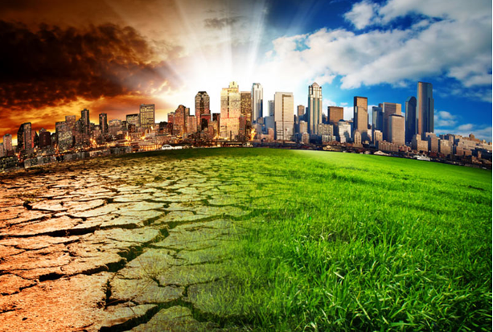

DIA DE
LA TIERRA

 3
3


 1
1 3
3 4
4 8
8-
Dia mundial de la tierra
Se muestra informacion del dia mundial:
-
Historia del dia mundial de la tierra
Se muestra informacion:
-
Dia mundial de la tierra
+Informacion busca aqui:
-
Dia internacional de la biodiversidad
Se muestra informacion sobre la biodiversidad:
-
+Informacion de la biodiversidad
Se muestra mas informacion:
Cuidemos al planeta

Tomas Ramirez Olivares 4E
Dia internacional
de la
biodiversidad
22 de Mayo - Día Internacional de la Biodiversidad Las Naciones Unidas proclamaron el 22 de mayo como día Internacional de la Diversidad Biológica, fecha que es celebrada en Venezuela con un honroso décimo lugar en todo el planeta, con la mayor variedad de animales, plantas y ecosistemas. Biodiversidad significa variedad de vida, tanto de los ecosistemas como de especies e individuos, incluidos todos los tipos de vida. La biodiversidad es el producto de los procesos evolutivos de los seres vivos. Nuestro planeta alberga una cantidad de especies, tanto vegetales como animales, las cuales viven en múltiples hábitats naturales, que cuando se alteran o destruyen, ocasionan la perdida de biodiversidad. El 19 de diciembre de 1994, la Asamblea General proclamó el 29 de diciembre, fecha de entrada en vigor del Convenio sobre la Diversidad Biológica, Día Internacional de la Diversidad Biológica (resolución 49/119). La Conferencia de las Partes en el Convenio, celebrada en Nassau en 1994, había recomendado la designación de ese Día. Posteriormente se cambió la fecha al 22 de mayo, como conmemoración de la firma de la Convención sobre Diversidad Biológica. La diversidad biológica es uno de los pilares de la vida humana. Estabiliza el clima de la Tierra, renueva la fertilidad del suelo y provee bienes y servicios que contribuyen a nuestro bienestar material. Sin embargo insostenibles patrones de producción y consumo y otras practicas nocivas, exacerbadas por la pobreza y otros factores sociales y económicos, continúan destrozando, a una tasa sin precedentes, el hábitat natural y a las especies que dependen de el.
¿Qué es la biodiversidad? La diversidad biológica, o biodiversidad, es el término por elque se hace referencia a la amplia variedad de seres vivos sobre la Tierra y los patrones naturales que conforma. La diversidad biológica que observamos hoy es el fruto de miles de millones de años de evolución, moldeada por procesos naturales y, cada vez más, por la influencia del ser humano. Esta diversidad forma la red vital de la cual somos parte integrante y de la cual tanto dependemos. Con frecuencia, se entiende por diversidad la amplia variedad de plantas, animales y microorganismos existentes. Hasta la fecha, se han identificado unos 1,75 millones de especies, en su mayor parte criaturas pequeñas, por ejemplo, insectos. Los científicos reconocen que en realidad hay cerca de 13 millones de especies, si bien las estimaciones varían entre 3 y 100 millones. La diversidad biológica incluye también las diferencias gen”ticas dentro de cada especie, por ejemplo, entre las variedades de cultivos y las razas de ganado. Los cromosomas, los genes y el ADN, es decir, los componentes vitales, determinan la singularidad de cada individuo y de cada especie. Otro aspecto adicional de la diversidad biológica es la variedad de ecosistemas, por ejemplo, los que se dan en los desiertos, los bosques, los humedales, las montañas, los lagos, los ríos y paisajes agrícolas. En cada ecosistema, los seres vivos, entre ellos, los seres humanos, forman una comunidad, interactúan entre sí, asi como con el aire, el agua y el suelo que les rodea. Es esta combinación de formas de vida y sus interacciones mutuas y con el resto del entorno que ha hecho de la Tierra un lugar habitable y único para los seres humanos. La diversidad biológica ofrece un gran número de bienes y servicios que sustentan nuestra vida. El valor de la diversidad biológica La protección de la diversidad biológica es un tema de nuestro interes. Los recursos biológicos son los pilares que sustentan las civilizaciones. Los productos de la naturaleza sirven de base a industrias tan diversas como la agricultura, la cosm”tica, la farmaceútica, la industria de pulpa y papel, la horticultura, la construcción y el tratamiento de desechos. La pérdida de esta diversidad biológica amenaza nuestros suministros alimentarios, nuestras posibilidades de recreación y turismo y nuestras fuentes de madera, medicamentos y energía. También interfiere con las funciones ecológicas esenciales. Nuestra necesidad de componentes de la naturaleza de los cuales una vez hicimos caso omiso con frecuencia es importante e imprevisible. De vez en cuando nos hemos precipitado de vuelta la despensa de la naturaleza para curar nuestras enfermedades, o a las infusiones de genes resistentes procedentes de plantas silvestres, para salvar nuestros cultivos de las incursiones de las plagas. Es más, la amplia gama de interacciones entre los diversos componentes de la diversidad biológica es lo que permite que el planeta pueda estar habitado por todas las especies, incluidos los seres humanos. Nuestra salud individual, y la salud de nuestra economía y de la sociedad humana, dependen del continuo suministo de los diversos servicios que nos brinda la naturaleza, y que serían sumamente costosos o imposibles de reemplazar. Estos servicios naturales son tan variados, y prácticamente infinitos. Por ejemplo, sería casi imposible sustituir, en gran medida, el control de plagas que cumplen diversas criaturas que integran la cadena alimentaria, o la polinización que llevan a cabo los insectos y las aves en su actividad cotidiana. Protejamos la biodiversidad La crisis de la biodiversidad es en gran medida resultado de la actividad humana y representa una amenaza seria al desarrollo humano. Pese a los renovados esfuerzos de estos últimos veinte años, la pérdida de diversidad biológica, a consecuencia de la destrucción de los habitats naturales, la agricultura intensiva o la contaminación, ha seguido su curso inexorable. Es necesario actuar para salvar lo que queda.
Imagen al dia de la biodiversidad
Se muestra la imagen:
Biodiversidad expresada en la imagen
Se muestra la imagen:
La biodiversidad expresada en una ilustracion
Se muestra la imagen:
Cuidemos al planeta
Tomas Ramirez Olivares 4E
Busca aqui
mas informacion
Se encuentra mas informacion y algunas imagenes acerca a este dia internacional de la biodiversidad
Imagen a este dia internacional
Se muestra imagen:
Imagen a este dia internacional
Se muestra imagen:
Imagen al dia internacional
Se muestra imagen referente a la biodiversidad:
Cuidemos al planeta
Tomas Ramirez Olivares 4E
Informacion
aqui
Busca mas informacion aqui del dia mundial de la tierra y observa las imagenes relacionadas al dia mundial
Imagen del dia mundial de la tierra
Observa y investiga con mas informacion:
Imagen del dia mundial de la tierra
Observa y investiga con mas informacion:

Cuidemos al planeta
Tomas Ramirez Olivares 4E
Conoce mas
informacion
Aqui encontraras mas información sobre la conciencia ecologica y tambien puedes observar las imagenes referentes a este tema
Como generar conciena ecologica
Se muestra imagen:
Despertar de la conciencia ecologica
Se muestran imagenes:
Cuidemos al planeta
Tomas Ramirez Olivares 4E
Conciencia
ecologica
¿Qué es la conciencia ecológica? Desde el momento en que el hombre comenzó a apropiarse de la naturaleza para dar forma a sus necesidades y caprichos, los ecosistemas de todo el mundo dieron su respuesta a este tipo de abuso, a través de consecuencias negativas como la contaminación y la pérdida de biodiversidad. Hoy en día podemos conocer, a través de los medios de comunicación, todas las noticias relacionadas con el cambio climático. Pero frente a la inevitable realidad, ¿cuántos de nosotros nos sentimos responsables -y actuamos en consecuencia- por el daño que estamos causando al planeta? Precisamente, tener una conciencia ecológica es entender que somos dependientes de la naturaleza y responsables de su estado de conservación. Ignorar esta verdad equivale a autodestrucción, porque degradando el medio ambiente estamos empeorando nuestra calidad de vida y poniendo en peligro el futuro de nuestros descendientes. Contrariamente a lo que uno podría pensar, el desarrollo económico y la conciencia ecológica no deben ser antónimos. Se puede producir de manera sostenible, fomentar la generación de energía limpia, reducir y reciclar los residuos y reutilizar un gran número de materiales que producirán nuevos productos útiles para el hombre de hoy en día. Es cierto que la conciencia ecológica debe comenzar dentro del hogar, pero debe extenderse a todas las áreas de nuestra existencia: simplemente porque todas nuestras acciones tienen un impacto positivo o negativo en la naturaleza.
Esta investigación documental trata del impacto de la contaminación ambiental por parte de industrias industriales en el medio ambiente, ya que es un problema que daña a todos los seres vivos en este planeta. También se basa en el objetivo de contar con datos estadísticos relacionados con este tema. Todas las obras y actividades son susceptibles a cambios causados en el medio ambiente, pero no por eso, no detenemos el desarrollo ni eliminemos la producción, sino que al contrario, cada vez se desarrollan más medios para permitir las actividades respetuosas con el medio ambiente. Ambiente. Por otro lado, la realización de cualquier obra requiere un suelo disponible y esto está condicionado por su situación, calificación y calidad, que dependen del uso previo y de su grado de contaminación. Estos son algunos de los elementos esenciales de un proyecto, que es necesario antes de proponer su ubicación definitiva. Por estas razones, es cada vez más necesario que los profesionales del proyecto sean conscientes de los medios, mecanismos y elementos que deben considerar e integrar en proyectos para los cuales son respetuosos con el medio ambiente. Este tema ha sido investigado por una mayor contaminación que hoy en día existe en nuestro país y en el mundo entero, ya que este es un problema que afecta a todos los seres vivos en este planeta y poco a poco el entorno que nos rodea también cambia. El medio ambiente es entendido por algunos, como el que se refiere a la naturaleza; Otros lo entienden en un sentido más amplio, como todo lo que abarca los problemas que afectan la vida, el bienestar y la tranquilidad de los hombres. El Derecho Ambiental se refiere de hecho a varios temas, la protección de la naturaleza, los recursos naturales renovables, la contaminación, la gestión de la tierra, entre otros, que van internacionalmente. Este trabajo pretende presentar algunas ideas inconclusas, mucho menos agotadas, sobre temas específicos que consideramos de gran importancia para nosotros y el medio ambiente en el que no se desarrolla, específicamente porque se encuentra en nuestro espacio territorial y es de alguna manera Un factor que Repercute directamente en nuestras vidas. Es lamentable que las historias de valores más importantes como la vida, la naturaleza, la verdad, la justicia y la cultura, en el momento de ser contrastado con intereses menos importantes pero más densos como puede ser un negocio lucrativo, hasta su negación. Es lamentable pero es la verdad; En las disputas que sacuden nuestra sociedad, la población civil y el hijo siempre son los grandes perdedores. Es por este motivo nuestro gran interés en la concienciación de alguna manera a la comunidad y otros establecimientos y también a las industrias industriales de gran importancia que deben darse al medio ambiente ya su conservación. Es por eso que la investigación documental y virtual se presentan ahora con el objetivo de un gran conocimiento del patrimonio cultural que ya existe en el tema y proporcionan una herramienta de defensa para detectar y prevenir la contaminación ... Considero que todos educamos y Es un documento donde los autores de libros y sitios web, investigadores, opiniones y experiencias de los protagonistas, porque incluso los estudiantes nos enseñan a enseñar mejor y nosotros como educadores que saben construir su propio aprendizaje fomentando su aprendizaje por descubrimiento o cultural y Biológica.
¿Aplicaciones (tipos)? La falta de conciencia ambiental no es un problema directamente relacionado con el hombre como ser aislado, sino con su desarrollo dentro de una cultura. La evolución del hombre está determinada por su adaptación al medio ambiente. La reducción de las emisiones de gases de efecto invernadero (GEI) es una de las principales actividades encomendadas a la mayoría de los gobiernos de todo el mundo. Las medidas que los países pueden tomar para reducir las emisiones son muy diversas y sirven tanto para crear un mundo mejor: evitar los desechos energéticos y reemplazar los combustibles fósiles con energía renovable para reemplazar el transporte privado por otros públicos y sostenibles. Regenerar los bosques, cambiar las técnicas agrícolas intensivas a las sostenibles, ayudar a los países en desarrollo a mejorar sin copiar los malos hábitos del llamado Primer Mundo, estimular la I + D que mejore el bienestar humano y ayude a conservar la naturaleza, (Reducción, reutilización y reciclaje), reemplazar los materiales y procesos contaminantes. Acciones para combatir el cambio climático: * Ahorrar energía, usar el transporte público, ir a pie o en bicicleta, regular la calefacción para que no supere los 20 ° C, aislar bien la casa, comprar electrodomésticos eficientes (bombillas de bajo consumo, clase A o superior). * Utilizar energía renovable en el hogar: paneles fotovoltaicos o pequeños cargadores solares para cargar baterías reutilizables o móviles, paneles solares térmicos para calentar agua o biocombustible para el automóvil. * Combate la pérdida de bosques: evita situaciones de riesgo que pueden causar incendios, plantar árboles, comprar madera o productos de papel certificados con el sello FSC. ¿La energía eólica que no contamina porque? Es una fuente renovable e inagotable de energía, cuyo uso preserva el medio ambiente, ya que no emite prácticamente gases de efecto invernadero, por lo que se considera que la electricidad producida es "verde" y limpia. Este tipo de energía fue la fuerza impulsora detrás del progreso de la mayoría de las civilizaciones, que lo utilizó como una fuerza motriz para sus molinos y veleros. Las turbinas eólicas fueron concebidas a principios del siglo XX con el fin de aprovechar esta fuente de energía renovable para generar electricidad. Han pasado los años desde los primeros pronunciamientos medioambientales. La ecología apareció en los medios de comunicación y llegó a impactar las tareas cotidianas y las mentes de la población en general. Sin embargo, dado que es más fácil de creer que desarrollar un pensamiento crítico, y con una difusión tan amplia de los niveles ecológicos administrados a niveles poco profundos, la ecología y su fuerte conocimiento fueron desplazados por el ambientalismo llevado a constituir intentos políticos y partidos políticos también. Las cuestiones ecológicas y los problemas pasaron a formar parte del conocimiento popularizado. Las cuestiones ecológicas se convirtieron en consignas comunes e incluso en campañas de partidos políticos y otros grupos sociales de naturaleza muy diferente en sus intereses de acción y opinión.
En algunos casos, el conocimiento ecológico se transformó en conocimiento ecológico. Este es el caso de la gestión del "Triángulo de la Ecología": Reducir, Reutilizar, Reciclar; Que ha sido desviado y en ocasiones se invierte para que en ciertas circunstancias, no raro, se resuman en la moto de reciclaje. Aquí queremos enfatizar la necesidad de sostener la vieja imagen de tal triángulo, reasumiendo su sentido ecológico ambiental y defenestrando su actual sesgo ecológico, renovando su intención original.
¿Consecuencias de la contaminacion del aire? En la gente: en el nivel del pulmón tal como asma, enfisema, cáncer de pulmón, bronquitis. A nivel de la piel, manchas, cáncer de piel, membranas mucosas de la nariz, irritaciones oculares, conjuntivitis, y agrava enfermedades cardiovasculares, entre otras enfermedades. En materiales: deterioro en materiales utilizados en construcciones y otras superficies. En las plantas: altera el proceso de fotosíntesis. Problemas ambientales: los problemas más dramáticos son: el smog de las grandes ciudades, los cambios climáticos globales y regionales, el efecto invernadero, la lluvia ácida y el agotamiento de la capa de ozono.
Imagen de la conciencia ecologica
observa la imagen ¿que prefieres?:

Conciencia ecologica
Se muestra imagen referente:

Cuidemos al planeta
Tomas Ramirez Olivares 4E
Datos del
desarrollador
nombre del alumno:
Tomas Ramirez Olivares
grupo:
"E"
semestre:
4°
sub-modulo:
Desarrolla Aplicaciones Moviles (DAM)
nombre del docente:
Jose Antonio Gomez Hernandez
Cuidemos al planeta
Tomas Ramirez Olivares 4E
Dia mundial
de la tierra
22 de abril
El 22 de abril de cada año se celebra el nacimiento del movimiento ambientalista moderno, el cual se inició en 1970 cuando 20 millones de norteamericanos tomaron las calles, los parques y los auditorios para manifestarse por un ambiente saludable y sustentable El Día de la Tierra de 1970 logró una coincidencia política que parecía imposible. Ese día condujo a la creación de la Agencia de Protección al Medio Ambiente de Estados Unidos y a la aprobación de leyes relacionadas con el aire limpio, el agua limpia y la conservación de especies en peligro de extinci&aocute;n. A partir de entonces, cada año en esta fecha, el mundo entero reflexiona y se moviliza por una Tierra mejor Hasta este siglo pocos pensaron que los seres humanos, viviendo en una extensión de tierra aparentemente sin límites y con agua abundante, podrían causar daños irreparables al medio ambiente. Sin embargo hoy los gobiernos y la gente en general en todo el mundo luchan con la erosión costera, los derrames de petróleo y la contaminación del agua potable, en tanto que cuestiones como el crecimiento de la población, la deforestación, la lluvia ácida y la posibilidad de rápidos cambios climáticos significan decisiones difíciles para el futuro. En 1975 un grupo internacional de estudio reunido en Belgrado, Yugoslavia, propuso un marco de referencia mundial para la educación ambiental, el cual se llamó la "Carta de Belgrado". Esta Carta afirma que la meta de la educación ambiental es hacer que la población mundial se preocupe por el medio ambiente y tenga el conocimiento y la dedicación que la capacite para buscar soluciones a los problemas actuales y prevenir problemas nuevos.
22 de abril dia mundial de la tierra
Se muestra imagen referente al dia mundial:

Celebramos el día Mundial de la Madre Tierra para recordar que el planeta y sus ecosistemas nos dan la vida y el sustento. Con esta celebración admitimos la responsabilidad colectiva, como nos recordaba la Declaración de Río de 1992, de fomentar la harmonía con la naturaleza y la Madre Tierra para alcanzar el equilibrio justo entre las necesidades económicas, sociales y medioambientales de las generaciones presentes y futuras. Este día nos brinda la oportunidad de concienciar a todos los habitantes del planeta acerca de los problemas que afectan a la Tierra y a las diferentes formas de vida que en él se desarrollan.
Dia mundial de la tierra
Se muestra imagen:
Cada año se celebra el día mundial de la tierra. Su origen en 1970 establece el inicio del movimiento ambientalista moderno, cuando 20 millones de norteamericanos tomaron las calles, parques y auditorios para manifestarse por un ambiente saludable y sustentable. Desde sus inicios, el Día de la Tierra logró una coincidencia política que parecía imposible, contando con el apoyo de distintas tendencias y posición económica, así como personas comunes, magnates y líderes sindicales. La celebración mundial condujo a la creación de la Agencia de Protección Ambiental (EPA) de Estados Unidos de Norteamérica, así como la aprobación de leyes relacionadas con el aire y el agua limpia, y la conservación de especies en peligro de extinción. A partir de entonces, cada año en esta fecha, el mundo entero reflexiona y se moviliza por una Tierra mejor. El Día de la Tierra es un día celebrado en muchos países el 22 de abril. Su promotor, el senador estadounidense Gaylord Nelson, instauró este día para crear una conciencia común a los problemas de la superpoblación, la producción de contaminación, la conservación de la biodiversidad y otras preocupaciones ambientales para proteger la Tierra. Es un día para rendir homenaje a nuestro planeta y reconocer a la Tierra como nuestro hogar y nuestra madre, así como lo han expresado distintas culturas a lo largo de la historia, demostrando la interdependencia entre sus ecosistemas y los seres vivos que la habitamos.
Imagenes ilustrativas
22 de abril dia mundial de la tierra:
Cuidemos al planeta
Tomas Ramirez Olivares 4E
Historia
El día de la Tierra es una manifestación más de nuestra naturaleza. Una celebración del respeto que le tenemos al planeta a pesar de los errores que cometemos durante nuestra existencia. La historia del Día de la Tierra, una conquista al gobierno americano de los 70 El suelo que pisas, el aíre que respiras y todo lo que comes, bebes, tocas o hueles pertenecen al planeta en el que vives. El Día de la Tierra es la jornada mundialmente escogida para celebrar la existencia de nuestra casa; un feliz accidente que nos ha permitido elevarnos desde meras células primigenias hasta llegar a ser los monos pensantes que somos hoy día. Y da igual tu creencia, tu fe o tus valores. El Día Mundial de la Tierra es un día con 45 años de historia y que pretende perpetuarse por muchos más. Es muy importante que comprendamos qué hacemos en este mundo y cómo lo hacemos. Porque es el único que tenemos y toda nuestra vida, la única que poseemos, está ligada a este planeta. Por eso, el Día de la Tierra es un día que todos deberíamos de celebrar con un poco de conciencia. La historia del Día de la Tierra, una conquista al gobierno americano de los 70 El suelo que pisas, el aíre que respiras y todo lo que comes, bebes, tocas o hueles pertenecen al planeta en el que vives. El Día de la Tierra es la jornada mundialmente escogida para celebrar la existencia de nuestra casa; un feliz accidente que nos ha permitido elevarnos desde meras células primigenias hasta llegar a ser los monos pensantes que somos hoy día. Y da igual tu creencia, tu fe o tus valores. El Día Mundial de la Tierra es un día con 45 años de historia y que pretende perpetuarse por muchos más. Es muy importante que comprendamos qué hacemos en este mundo y cómo lo hacemos. Porque es el único que tenemos y toda nuestra vida, la única que poseemos, está ligada a este planeta. Por eso, el Día de la Tierra es un día que todos deberíamos de celebrar con un poco de conciencia. Fue todo un éxito. Debido a la participación de dos mil universidades, diez mil escuelas y centenares de comunidades, el gobierno Estadounidense decidió crear Agencia de Protección Ambiental. Este solo fue el comienzo. Durante el 72, la cumbre de la Tierra, en Estocolmo, puso de manifiesto la manifiesta necesidad de una ley medioambiental internacional más comprometida. En los noventa, la celebración del Día de la Tierra ya estaba mucho más generalizada fuera de Estados Unidos y a día de hoy se celebra a nivel mundial. Es más, la plataforma Día de la Tierra trata de promover la concienciación medio ambiental mientras que numerosos colectivos y entidades participan a su manera. Por ejemplo, Google promueve el día con un doodle y una actividad especial mientras que en empresas como Apple, bastante comprometidas con el medio ambiente, aprovechan este día para mostrar su informe de compromiso medioambiental. Gracias a iniciativas como esta, el mundo ha ido tomando una concienciación medioambiental que antes de los 70 era completamente inexistente o muy vaga. Gracias a esto hemos puesto remedio y frenado algunos de los problemas más acuciantes.
Imagen de la historia de la tierra
Imagen ilustrativa:
¿Qué podemos hacer en este día?
En primer lugar, hay que dejar claro que el Día Mundial de la Tierra no es el único que celebra y promueve el respeto medioambiental. Existen otros también dados a la protección de la naturaleza (cómo el día de la Naturaleza, el 3 de marzo o el, más importante, día del Medio Ambiente, declarado por la ONU para el 5 de junio. Pero una cosa no quita a la otra. El Día Mundial de la Tierra es un día más en el que concienciarnos de dónde vivimos. Porque nuestras acciones traen consecuencias; no solo para nosotros sino para todo lo que nos rodea, incluyendo nuestros hogares, nuestros seres queridos, nuestros hobbies, nuestros trabajos... Por ello, el Día Mundial de la Tierra es una jornada especial para realizar una acción orientada al respeto. Por nuestro planeta. particular, Esto puede hacerse a nivel por supuesto. Pero la plataforma Día Mundial de la Tierra promueve acciones más grandes. La idea es presentar, desde un colectivo, una actividad que muestre el compromiso con la naturaleza. Esto puede surgir desde todo tipo de entidades, sean del carácter que sea. Por ejemplo, en Francia se unió una cadena de personas, cogidas de la mano, kilométrica, en honor a uno de los últimos ríos limpios: el Loira. En el Everest, un equipo internacional se reunió para retirar parte de la basura que afecta a su cima. Haití considera el Día Mundial de la Tierra como de fiesta nacional en honor al planeta. Y estos son solo algunos ejemplos. Desde la página ofrecen información y acciones en las que podemos tomar parte. También aprovechan para promocionar eventos que estén relacionados con este día. Y es que parece que todas las acciones de respeto y defensa del medioambiente parecen pocas. Con un calentamiento global presente, una pérdida de biodiversidad preocupante y una contaminación persistente, este planeta necesita de una atención especial. Y toda acción es poca.
Ilustracion de la historia de la tierra:
Imagen que se puede observar a este reconocido dia:
Cuidemos al planeta
Tomas Ramirez Olivares 4E